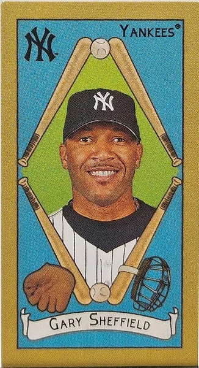
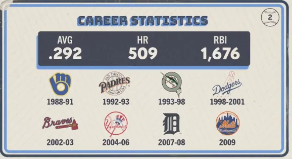

Gary Sheffield "Sheff"
Career Highlights & Facts
(Facts are AI-generated and may require verification)
- Nine different franchises employed this slugger over a 22-season career.
- The 1992 National League batting title remains a primary career highlight.
- Dwight Gooden is the uncle of this nine-time All-Star.
Would you like to find out more about Gary Sheffield?
Career Totals
| WAR | AB | H | HR | BA | R | RBI | SB | OBP | SLG | OPS | OPS+ |
|---|---|---|---|---|---|---|---|---|---|---|---|
| 60.5 | 9217 | 2689 | 509 | .292 | 1636 | 1676 | 253 | .393 | .514 | .907 | 140 |
Statistics via Baseball-Reference.com
The Original Clue
